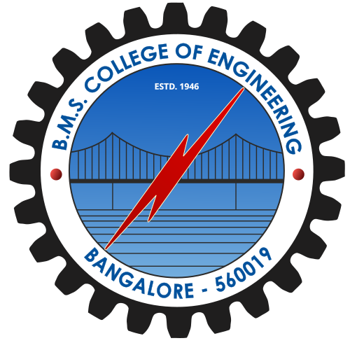
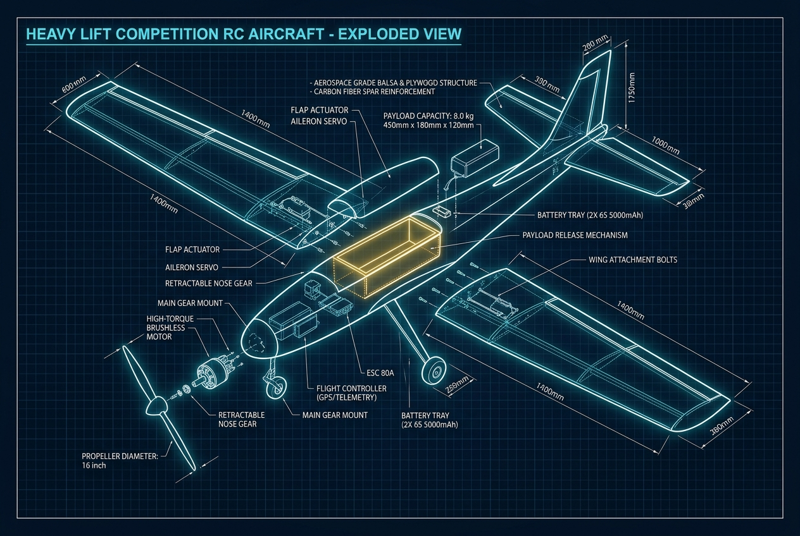

Fabrication bays
Laser cutting, balsa fabrication and carbon-fibre layup benches.
FLIGHT CREW · PROPEL LAB-3 · BENGALURU
AEROSPACE & UAV INNOVATION AT BMSCE
We design, build and fly ambitious aircraft and autonomous systems. One student team, a shared flight line, and a lot of engineering between the sketch and the sky.


OFFICIAL CREST01 — OUR COLLEGE ROOTS
AeroBMSCE is the aerospace, aeromodelling and unmanned systems innovation club of BMS College of Engineering. From Propel Lab-3, students across disciplines turn ideas into flight-ready hardware.
Laser cutting, balsa fabrication and carbon-fibre layup benches.
Static thrust testing and custom brushless ESC development.
Ground telemetry, hardware-in-the-loop rigs and airworthiness checks.
02 — FLAGSHIP MISSION
Ground trials are where a design earns its wings. The Blue Impulse team and Yaksha fleet bring aircraft, people and hard-won details together on the flight line.
 GROUND FLIGHT TRIALS · TEAM BLUE IMPULSE · YAKSHA FLEET
GROUND FLIGHT TRIALS · TEAM BLUE IMPULSE · YAKSHA FLEETEngineering with purpose, tested in the open. Our student teams take on aircraft design, autonomous systems and payload challenges at national and international competitions.
Illustrative interaction only — no aircraft control.
03 — ENGINEERING DIVISIONS
From airframe design to firmware commits, members work across disciplines to build and test real systems.
High-lift fixed-wing aircraft engineered for SAE Aero Design payload and performance challenges.
See our journeyMultirotor platforms and sensor-led navigation research for precise, dependable missions.
Explore our processFast, agile racing platforms shaped by iterative design, careful testing and teamwork.
View the archiveStudent-led flight electronics and mechanisms, developed through research and prototyping.
Build with us04 — FLIGHT LIFECYCLE
Careful engineering is a loop: explore, fabricate, measure, compete, and learn from every flight.
SolidWorks · ANSYS
Flow5 · MATLAB
Laser cutting
Composite layup
Thrust bench
Ground telemetry
SAE International
Aerothon · Derbies
Mission ready
Flight proven
05 — CAD VAULT
Concepts and aircraft from our design bureau. Select a frame in the archive to inspect the source photography.

BLUEPRINT / FIXED WING
Competition aircraft shaped around a student team's payload and flight design challenge.
06 — FLIGHT HONORS
07 — PHOTO ARCHIVE
Flight trials, fabrication and team moments from the AeroBMSCE archive. Select any image to open it.
08 — RECRUITMENT DISPATCH
Applications open for the 2026–27 crew intake.
Pick a division and tell us what you'd like to make. No prior flight hours required — just curiosity, commitment and a willingness to learn with a team.
One important note
This static site does not store or submit applications. Your email app will open with a draft addressed to the team; review it and press Send to apply.